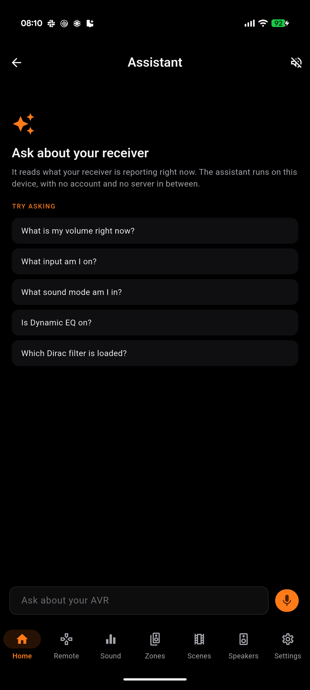
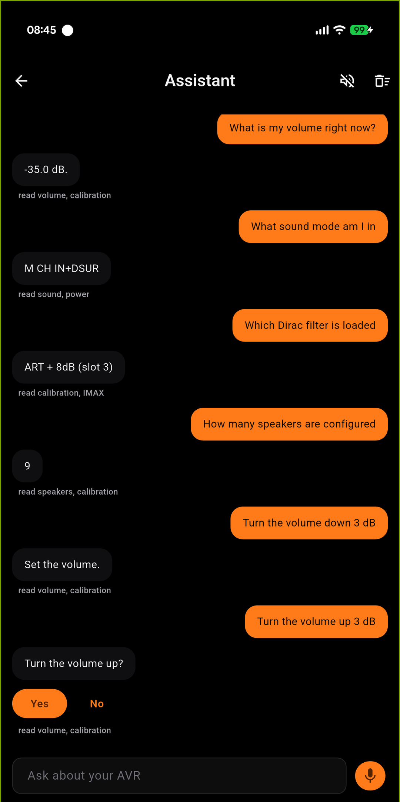
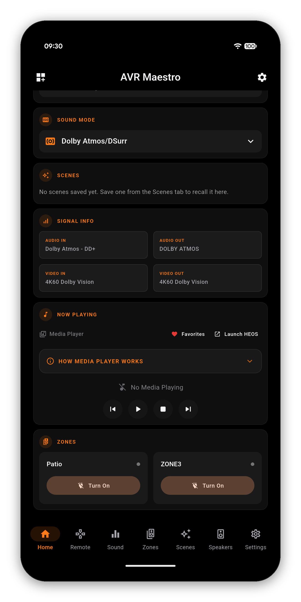

Most assistants know a lot about receivers in general. This one knows about yours: the volume it is on right now, the Speaker Preset it is running, whether Dynamic EQ is on, what it is decoding this second. It reads your own receiver and answers from that, using a model that runs on your device rather than a service somewhere else.
Type a question, or hold the microphone and say it. There is nothing to sign into, no key to paste, and no account. If your device can run an on-device model, the assistant works the moment you open it.
Ask it in your own words. "How loud is it", "what am I watching this on", "which Dirac slot is loaded", "is Dynamic EQ on" - it resolves what you meant against the things your receiver actually reports, so you do not have to know what the setting is called.


Everything the app reads off your receiver, which is everything on the screens in this guide. Not a fixed list: a chassis that reports IMAX gets asked about IMAX, and one that does not is never offered it.
| Ask about | And it knows |
|---|---|
| Power and volume | On or standby, the level in dB, mute, eco mode, and your receiver's own volume limit |
| Source and sound | The selected input under the name you gave it, the sound mode, and the format being decoded |
| Calibration | Audyssey MultEQ, Dynamic EQ, Dynamic Volume, reference level offset, LFC, and which Dirac Live slot is loaded |
| Speakers | The layout, per-channel trims, subwoofer levels and how many subs are configured |
| Video | Resolution and HDR in and out, picture mode, video processing, input mode, HDMI audio output, auto lip sync |
| Zones | Each zone's power, input, volume, channel trims, sleep timer and quick select |
| The chassis | Front panel brightness, auto standby, Bluetooth transmitter, and each trigger by number |
| What is playing | The track on a network source and its transport state |

Ask it to change something and it changes it. What differs is how much ceremony each action gets, and the asymmetry is deliberate.
| Ask for | What happens |
|---|---|
| Power on or off, mute, unmute | Done immediately, then it tells you what it sent |
| Turn the volume down | Done immediately. The moment somebody wants it quieter is the moment they least want a dialog |
| Turn the volume up | Asks first. It is the one action whose worst case - a damaged driver - cannot be undone by the person standing in the room |
| Switch the input | Resolved against your own source list, under the name you renamed it to. Two possible matches and it asks which |
The amount is yours to give. "Turn it down by 5 dB" moves 5 dB; "turn it down" with no number moves one step, the same as one press of the button. It will not decide on a figure you did not say.
Changing the sound mode from here is not supported yet. Your receiver organizes sound modes by category and selects within the active one, so it is not a single name to send - the Sound tab does it properly.
"Any calibration recommendation?", "how do I make dialogue clearer?", "should I turn Dynamic EQ on?" - these are different from a lookup, and the assistant treats them differently. It reasons over your readings and comes back with a couple of concrete options, each naming a setting your receiver actually has, and says which it would try first.
What does not change is where the numbers come from. It may reason freely; it may not state a figure it was not given. If your readings do not support a recommendation it says what it would need to see instead of guessing.
Hold the microphone button and talk. It fills the box with what you said so you can see it before it is sent.
The assistant runs a language model on your own device. No account, no server, nothing to sign into - which also means the device has to have a model on it. That is not something the app can install for you, and it is the one requirement we cannot work around.
| Platform | What it needs |
|---|---|
| iPhone, iPad, Mac | iOS 26 or macOS 26, on a device where Apple Intelligence is available and switched on. If it is off, the app says so and points you at Settings rather than hiding the feature. |
| Android | Gemini Nano, through Google AICore. The app reaches it with Google's ML Kit Prompt API, and that API has its own supported-device list - see below. |
| Windows, Linux | No on-device model exists to run, so the assistant is not shown. The rest of the app is unaffected. |
This is Google's list, not ours. It is reproduced here because it is the single thing that decides whether the assistant appears on an Android phone, and because Google publish it in a place most people never look.
| Model | Devices |
|---|---|
| Gemini Nano v3 | Google Pixel 10, 10 Pro, 10 Pro XL, 10 Pro Fold, Pixel 9, 9 Pro, 9 Pro XL, 9 Pro Fold · Samsung Galaxy S26, S26+, S26 Ultra · Honor Magic 8 Pro · iQOO 15 · Lenovo Idea Tab Pro Gen 2, Legion Tab Gen 5 · Motorola Signature · OnePlus 15, 15R · OPPO Find X9, X9 Pro, Find X8, X8 Pro, Reno 14 Pro 5G, Reno 15 Pro 5G, Reno 15 Pro Mini 5G, Reno 15 Pro Max 5G · realme GT 7T · Sharp AQUOS R11 · Sony Xperia 1 VIII · vivo X200T, X200, X200 Pro, X300, X300 Pro |
| Gemini Nano v2 | Samsung Galaxy Z Fold7, Z TriFold · Honor Magic V5, Magic 7, Magic 7 Pro · iQOO 13 · Motorola Razr 60 Ultra, Razr Ultra 2025 · OnePlus 13, 13s · OPPO Find N5 · POCO F7 Ultra, F8 Pro, F8 Ultra, X7 Pro, X8 Pro · realme GT 7 Pro · vivo X200 FE, T4 Ultra · Xiaomi 14T Pro, 15, 15T, 15T Pro, 15 Ultra, 17, 17 Ultra, Pad Mini |
Google's published support list for the ML Kit GenAI Prompt API, read on 20 August 2026. Google add devices over time and this page is a copy, so check theirs if your device is newer than this list.
Separate from Google's list, and shorter, because it only contains hardware we have actually held.
| Device | Result |
|---|---|
| Pixel 10 Pro XL | Tested against a Marantz Cinema 30, on the receiver's own readings |
If your device is on Google's list above, the assistant will appear and work; this second table is only about what has passed through our hands. We would rather name one device honestly than imply we have a lab.
Each of these is a different sentence on purpose, because each has a different answer.